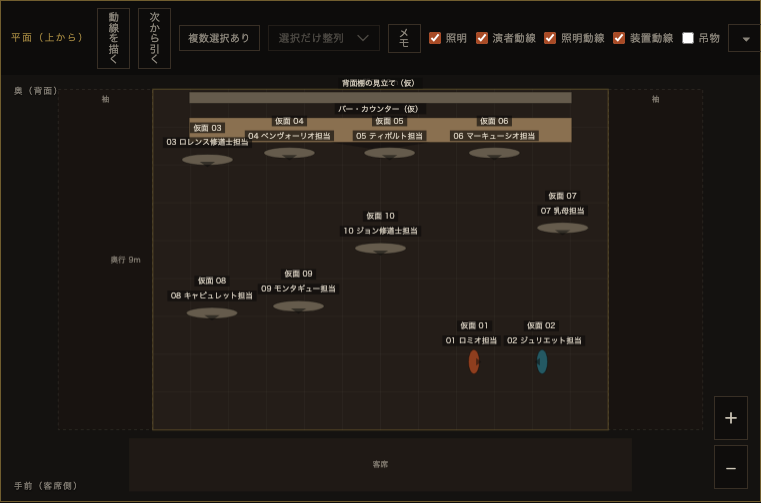
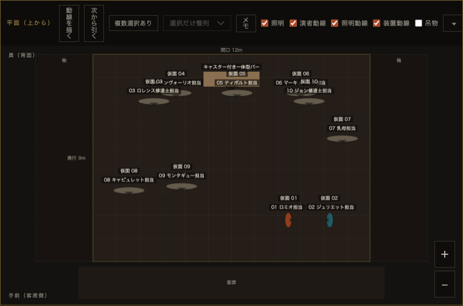

確定事項
-
@@CONFIRMED_ITEMS@@
AI SHOWWRIGHT FOR STAGESKETCH / ISOLATED REVISION
元ショーを上書きしない、Stage Sketch読込用の隔離成果物です。本人確定のM6転換を反映し、バーだけ異なって見えた原因を生成データまで追跡して修正しました。
現実寸法の判断ではなく型割当の修正
元生成スクリプトはバーをblock / 10.08m、棚をwall / 10.08mとして書き出していました。Stage Sketchはその登録寸法を優先し、読込後も値を変えずに描画していました。
2.4 × 0.6 × 1.1mは現行Stage Sketchのcounter既定値です。実物の寸法・搬入可否・安全性を確定するものではありません。
Stage Sketch実表示


サブタイトルと照明目的を分離
群れの中で、二人だけが同じ速度になる。
beat.role と同文のため、場面の役割が照明要約として重複。
@@Q03_LIGHT@@
beat.role は「@@Q03_ROLE@@」のまま保持。
showwright-core 1.0.0
演出内容、出典、判断状態、未計測値、M6の意味制約を、Stage Sketchの座標・部品型・描画項目を持たない内部形式へ分離しました。Stage Sketch JSONはこのコアから生成され、今回の主JSONのバイト列とハッシュは変わっていません。
判断の境界を分離
実測結果は下のJSONレポートへ
主JSON SHA-256: @@OUTPUT_SHA@@
生成から読込まで
装着した仮面は、製品の既存仕様で演者の顔・手へ追従します。この座標補正は別記し、人物や独立セットの配置変更とは区別します。
試験は各レポートの対象ハッシュ時点の結果です。生成・編集後は再検査してください。
元資料は未変更